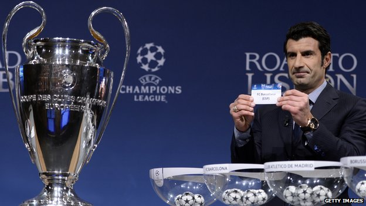

The Scope
The champion’s league is a competition that consists of 32 teams. Only football clubs from Europe can take part in it. It is a 2 round competition the first being the group stage where there are 8 different groups and each group consists of 4 teams. Each team has to play everyone twice in their group playing them both at home and away. The next stage is the knockout rounds, which only allows the top 2 teams from every group. Who teams face is chosen at random.This is done through the champion league draw which is live on television. Once the fixtures have been set they then move on to the round of the 16, then the quarterfinals then the semi finals and the final itself. The winner of each game is determined after two matches and only in the final teams have to play a single game. The way the champion league is run is determined by a coefficient system. This system analyses the performances of different football clubs in Europe over the period of 5 years. The champion’s league only allows only specific number of football clubs entries into the tournament. They do this by allowing only the top 3 ranked countries 4 entries spaces into the tournament, While countries ranked 4-6 are allowed 3 entries spaces, Countries ranked 7-15 get only 2 entries, countries ranked 16 or lower only get one entry.Also if a team win the champion league it gives them automatic qualification into the next season’s champion’s leagues, which give them the chance to defend their title for the next season running.
